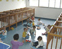

Dicas
Mordidas: o que elas querem dizer?
As mordidas fazem parte dos mecanismos de defesa da primeira infância, nessa fase, as crianças estão em processo de socialização, aprendendo a dividir o espaço com outros e a exteriorizar seus medos. É também nessa parte da infância que acontece a fase oral...
Alimentação
Pra ficar fortinho e crescer!
Fornecemos dois lanches, almoço e jantar às crianças de acordo com as necessidades e...

Depoimentos
Eu estava pesquisando alguns berçários quando fiquei sabendo que o Dona Cegonha seria inaugurado. Visitei as obras, conheci mais sobre a proposta pedagógica e fiquei encantada. Minha filha está em boas mãos.
Priscila Viana - Mãe de Iasmin